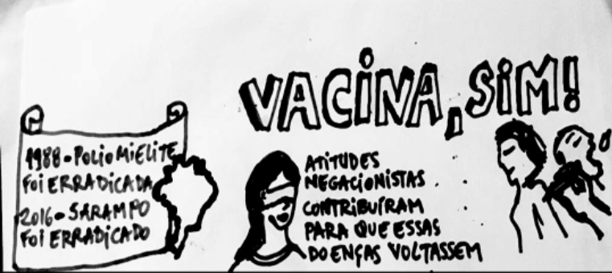

Análise geográfica da Cobertura Vacinal e a ocorrência do Sarampo no Brasil, 2000-2019
O presente estudo pretende investigar a cobertura vacinal com a ocorrência de casos de sarampo para identificar regiões brasileiras com maior heterogeneidade na evolução temporal e a distribuição geográfica da cobertura nacional da vacina dupla e tríplice viral.
Público-alvo: Usuários do SUS e Profissionais de Saúde
- Sarampo é uma doença altamente contagiosa que acomete principalmente crianças e pode causar internações e morte. Cada caso de sarampo pode contaminar cerca de 13 pessoas, enquanto um caso de covid-19 pode contaminar 2 a 3 pessoas. Para evitar epidemias, 95% das crianças precisam vacinar com 2 doses, aos 12 e 15 meses de idade. Adultos também podem se vacinar. Em 2020, menos de 80% das crianças brasileiras receberam a primeira dose e menos de 70%, a segunda dose da vacina contra sarampo, aumentando o risco de epidemias de sarampo no Brasil. Veja no link.

Coordenação:
Yara Hökerberg (yarahahr@ini.fiocruz.br)
Raquel Vasconcelos (raquel.vasconcellos@ini.fiocruz.br)
Equipe:
Luan da Silva (snoedasilva@gmail.com)
Sônia Regina Lambert (sonia.lambert@ini.fiocruz.br)
Wagner Tassinari (tassinari@ufrrj.br)